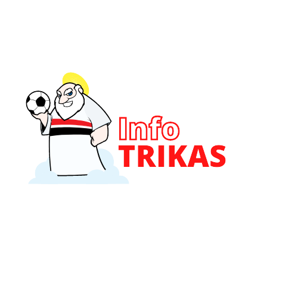

Bem vindo!
Voltar
Sair
--
Hino
Nunca fui Rebaixado
Grito Tricolor
Vamos São Paulo
Galinha
Sou São Paulo Até Morrer
Domingo eu vou no Morumbi
Como eu te amo tricolor
A Cada Dia Te Quero Mais
A Maré Tá Cheia
Hey Porco, Deixa de K.o
O Mais Querido
Chora Porco Imundo
Chororô do menguinho
E Ninguém Cala
Se Você Não É São Paulino
Mas Quem Não Torce Pro São Paulo
Com Muito Orgulho
Paixão Eterna
Se tem jogo eu vou
Ver Música
Escolha acima uma musica !!!